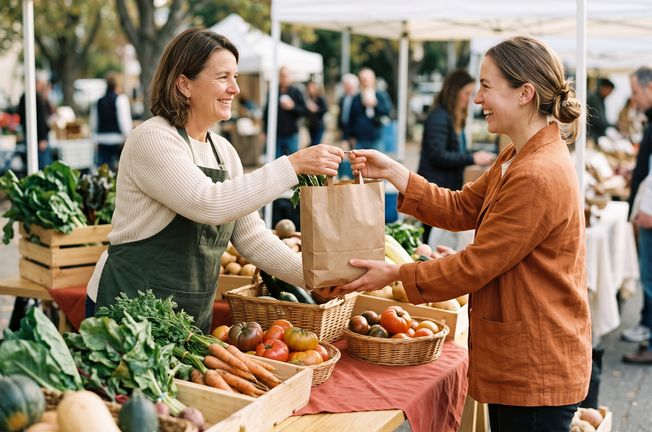
Momenten die écht iets betekenen
Aan Tafel gaat over eten en over wat het met mensen doet. Je vindt hier recepten uit vijf werelddelen, telkens met beelden van de streek en van mensen die er samen eten. Zo zie je hoe elke cultuur op haar eigen manier aan tafel schuift. Daarnaast lees je nieuws uit de voedselwereld.
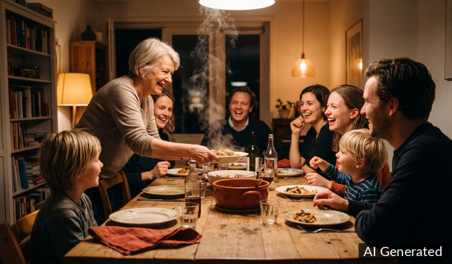
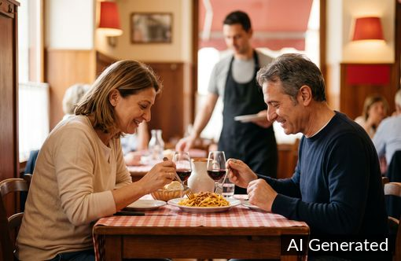
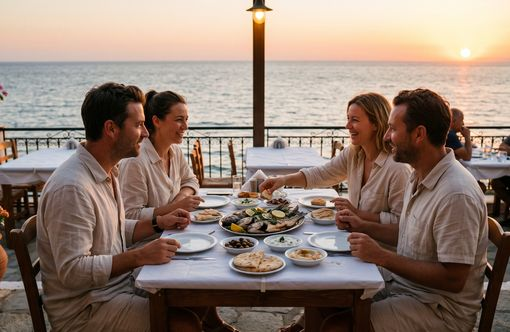
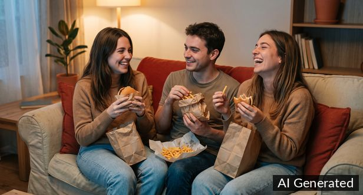
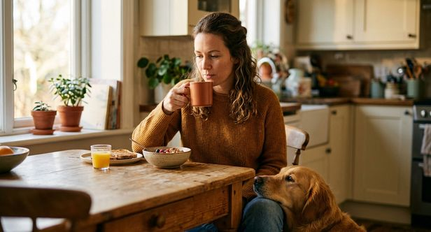
"Iemand aan tafel uitnodigen is zorgen voor zijn geluk zolang hij onder jouw dak is."
Nieuws uit de voedselwereld
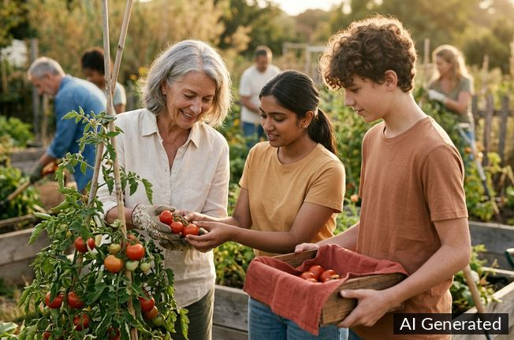
Buurtmoestuin brengt jong en oud samen rond de oogst
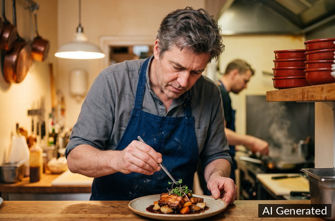
Kleine keuken, grote ambitie: chefs kiezen voor intieme restaurants
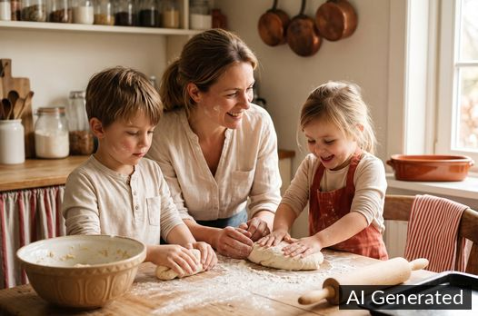
Zelf brood bakken wint terrein bij gezinnen met kinderen
Nieuwe recepten
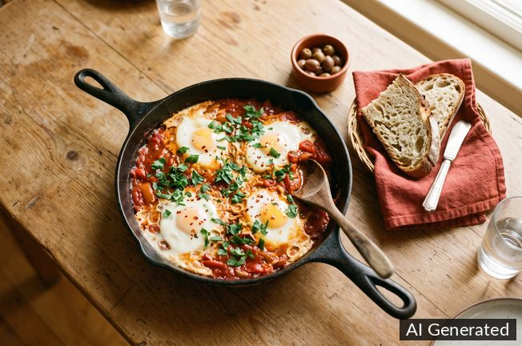
Shakshuka met eieren en peterselie
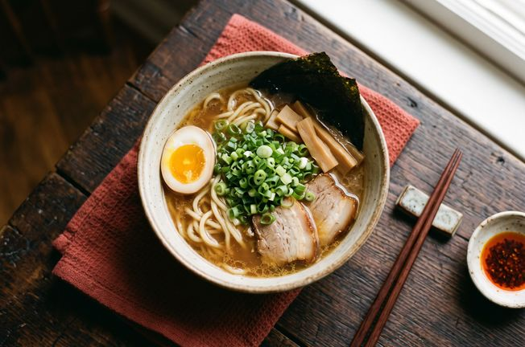
Ramen met halfgekookt ei, lente-ui, varkensvlees en nori
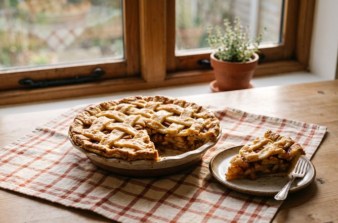
Appeltaart
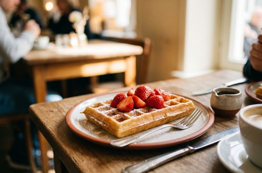